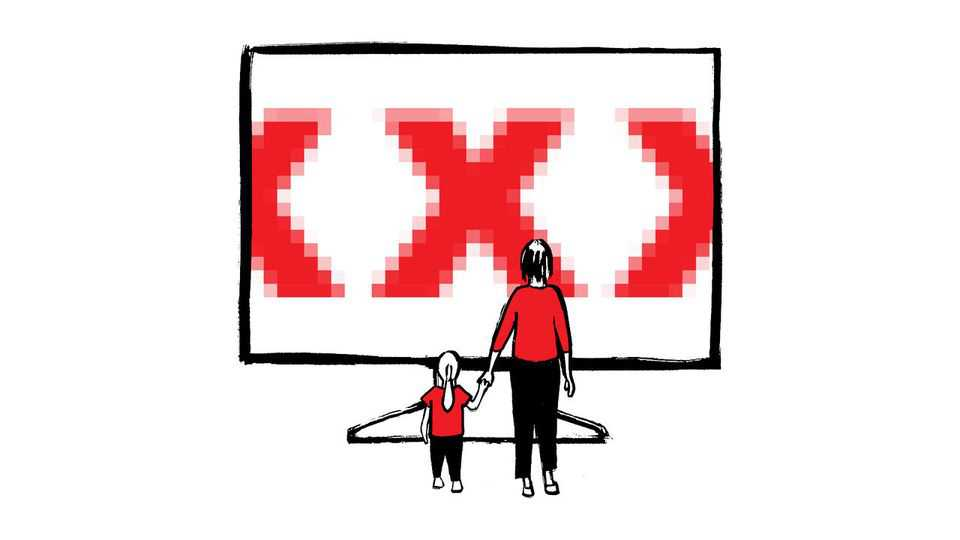
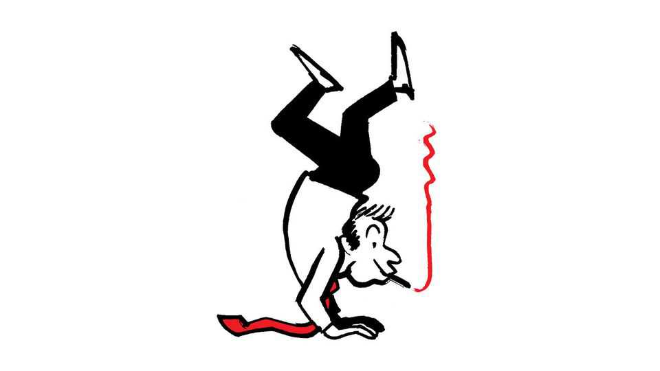

Does porn change behaviour?
Also this week, the midterms, Rastafari, describing the OECD, tongue-scraping, amoebae

Nov 12th 2026
Letters are welcome via email to letters@economist.comFind out more about how we process your letter
Britain’s ban on some pornography is based on flimsy evidence, you said, and you questioned the basis of the new offences that have just come into force (“Gagging order”, November 7th). As the author of the government’s independent review of pornography, I approached the task with an open mind. Academic literature was reviewed and I heard extensive evidence from researchers, regulators, abuse charities, safeguarding professionals, police officers, teachers, parents and young people. The weight of that evidence demonstrated that some categories of pornography are causing harm, particularly to women and children, and that legislative action was justified.
It is alarming that much online pornography is dominated by depictions of violence against women. Were comparable levels of violence directed at almost any other group there would be little debate about society’s legitimate interest in restricting its commercial distribution.
Policymakers must always pay attention to what is being observed on the front line. Around a third of women report having been choked during sex. Child-on-child sexual abuse has risen sharply, often involving acts of strangulation. Of course, young people learn about sex from many sources, including peers. But why are behaviours that were once relatively rare and confined to niche pornography increasingly being reported as routine? The suggestion that this transformation occurred independently of an online pornography industry that normalises and monetises such content is implausible.
Nor is this primarily a free-speech debate. Britain has regulated the commercial distribution of harmful sexual material for decades. Much of the content now prohibited online could not legally have been sold on video, DVD or through other regulated channels. Parliament long ago accepted that some material is sufficiently harmful to justify restriction. The internet did not suddenly make those harms disappear; it merely placed them beyond the reach of existing regulation.
Nor am I persuaded by the argument that the law is too difficult to enforce. Regulators and courts have decades of experience distinguishing lawful from unlawful sexual content. There will inevitably be borderline cases, as there are in many areas of law, but that is hardly grounds for abandoning regulation and the rule of law altogether. Regulating the internet is challenging. Yet if the test for legislation is perfect enforcement, few laws would survive.
These reforms do not mark the end of pornography, nor do they regulate the private lives of consenting adults. They tackle the rise of violence, choking, incest and depictions of children in unregulated internet porn. Or is it the view of The Economist that we just shrug our shoulders and say “that’s life”?
Baroness BertinHouse of LordsLondon
Your Checks and Balance newsletter (November 6th) asked what should the Democrats focus on to unify the party behind an agenda that resonates with voters? The main issues for voters in the midterms were the cost of living and corruption. So tackling those issues must be the highest priorities. Common sense generally resides in the political middle, so the sensible centrists on both sides should do their utmost to collaborate on those voters’ concerns.
The Democrats and the non-MAGA part of the Republican Party need to handle the near future with great care. In genetics the tendency is for a regression to the mean. That goes for most aspects of societies. Without that the democratic process does not succeed. In recent years the shift towards extremism and autocracy has thrown up big question marks over the future of democracy. I sincerely hope that the results of the midterms have put paid to a few of those.
I am the grandmother of an infant in Paris. We have such a strong vested interest in the future that we must ensure the new holders of power do not repeat the mistakes of those who have abused power in the past decade.
Helen HoldsworthSalisbury, Wiltshire
The Democrats must not waste time trying to impeach Donald Trump. Citizens are angry about prices and the Iran war. Stopping the war must be a priority. It has consumed too much money and human life. Declare victory and leave the quagmire behind. Also, the Democrats will need to deal with the looming insolvency of the Social Security trust fund .
Ted FiskNaperville, Illinois
The most important issue for the future of the country is education. I am the grandson of four immigrants from Ukraine (then tsarist Russia) and Bavaria. All encouraged educational achievement for their offspring. My parents, aunts, uncles and cousins all achieved college, professional, or graduate degrees. My sons, niece and their generation continue in educational achievement as productive and thoughtful citizens. I am retired from a medical career. In this era of technology-based business, advanced education is essential for success. Information technology became integral to the economy, displacing a few jobs but creating new employment opportunities. The same is happening now with artificial intelligence and robotics. Providing the right educational material, beginning at high school and then continuing for adults in the workforce, should be a national priority. The curriculum should also include an understanding of human culture and its diversity, history, comparative religion, languages and ethics. Gordon ShecketDublin, Ohio
“Abundance”, a study by Ezra Klein and Derek Thompson into the lack of an ambitious industrial strategy in America, should be a guide for Democrats. It emphasises the importance of infrastructure and invention, and the fact that regulations that were a good idea decades ago now make it extremely expensive and slow to get anything built. Permits and lawsuits are a huge hurdle. The Democrats should reduce regulatory and legal hurdles to drive the economy both in terms of job creation and productivity.
William MeiselTarzana, California
Rastafarians in Jamaica want more rights, you report (“Herbal remedies”, October 24th). One right deserves more attention: a fair share in the economic value our culture creates. This is not simply a question of ownership but a wider failure to build the infrastructure needed to support Jamaica’s creative economy. Rastafari colours, language and music help sell holidays, clothing and cannabis around the world, yet those who nurtured Brand Jamaica and govern the culture across parishes and communities see little of that money. On a national scale Jamaica ranks 38th of 139 economies for intangible assets but 129th for creative goods and services, and it earned little from the world’s use of its intellectual property last year.
Recognition matters. But rights become real when they pay. Jamaica could register collective marks for Rastafari symbols, let community organisations license their use, and give Rastafari a fair route into the legal cannabis industry, as Antigua and Barbuda is exploring. That would turn a culture that the world draws from into an asset its people own.
Natasha FergusonFounderN.F. Orange Economy AdvisoryKingston, Jamaica

I implore you to stop describing the OECD as a “club” of mostly rich countries, the latest example being in your Charlemagne column of October 17th. You correctly distinguish other global bodies by their structure, for instance, referring to the G7 more accurately as a “group” of rich countries. But while the G7 operates primarily as an informal, high-level political forum (a “group” or “club” format), the OECD is a formal, treaty-based international organisation with a permanent secretariat, structured directorates, and legally binding frameworks on international taxation, anti-bribery and economic policy.
Continuing to apply a casual, reductive shorthand like “club” to the OECD conflates an institutional, data-driven regulatory body with informal political coalitions. It inadvertently diminishes the rigorous, global standard-setting work that the organisation performs.
ERIC PARKWashington, Missouri
I came across the word manif in your leader on “The agony of liberal Europe” (October 24th). There was no definition as to what it meant, but from the context of the article a non-French speaking reader could guess that manif refers to a protest. Could you please include definitions of words borrowed from other languages, especially if you are going to continue providing a superfluous definition of the OECD in every other issue.
SAMUEL ADAMSMunich
“Should you be using a tongue scraper?”, you ask (Well Informed, October 10th). Although it sounds mundane, tongue-scraping forms part of the dinacharya, an ancient daily-health routine. The morning usually starts with swishing edible oil in your mouth, followed by tongue-scraping, tooth-brushing, inserting nasal oil drops, a self-massage with oil, and drinking a glass of warm water sprinkled with fresh lemon juice or apple vinegar to help bowel movement and discharge toxins. Physical and breathing exercises, shower, prayer and meditation are next.
Slava DodonuGeneva
Bartleby lampooned the lessons for leadership provided by amoebae (October 31st), and yet, the spectacular problem-solving skills of these microbes have inspired the design of micromachines made from liquid metal and analogue computers that “think” like amoebae. Friedrich Nietzsche recognised their will to power and Sigmund Freud likened their movements to expressions of the human ego. Amoebae are the paradigms of self-determination and deserve an apology from Bartleby.
Nicholas MoneyProfessor of biologyMiami UniversityOxford, Ohio